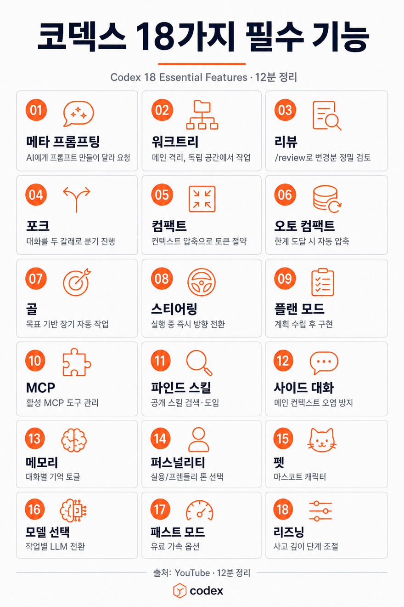

youtube-download ↓ 단일 prompt · 자율 4단계 elevenlabs-stt ↓ openai-gpt-image-2 ↓ 한국어 인포그래픽 PNG

| Harness | Claude Code CLI | Agent SDK | 판정 |
|---|---|---|---|
| Skills | SKILL.md | setting_sources + skills=[...] | ✅ |
| Hooks | settings.json 셸 명령 | HookMatcher async 콜백 | ✅ |
| Subagents | .claude/agents/*.md | AgentDefinition 병렬 spawn | ✅ |
| Sessions | --continue / --resume | resume / fork_session | ✅ |
| SessionStorage | ~/.claude/projects/ | 커스텀 store (Redis/S3) | ✅ 우위 |
| SessionStart/End hook | settings.json | Python 직접 불가 (TS는 가능) | ⚠️ |
| 플랜 | 월간 Agent SDK 크레딧 |
|---|---|
| Pro | $20 |
| Max 5x | $100 |
| Max 20x | $200 |
| Team Std / Premium | $20 / $100 per seat |
| Enterprise | $20 / $200 Premium |